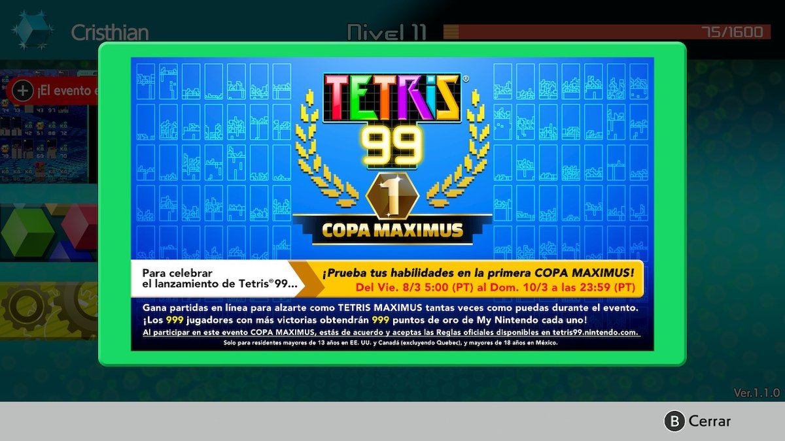

Tetris 99: Primer Torneo
El día de hoy, Viernes 08 de Marzo del 2019, tendrá lugar el primer torneo en línea oficial de Tetris 99, el cúal tendrá una duración de todo el fin de semana y que contará con un premio de 999 puntos de oro de Nintendo (más o menos $10).
Las reglas son sencillas, basicamente es jugar Tetris 99 todo el fin de semana y ganar todas las partidas que se pueda.
Más allá de que las reglas parezcan sencillas, el juego es otra historia. Tetris 99 para los que no lo sepan, es un Battleroyal basado en el clásico juego Tetris pero con la posibilidad de atacar y ser atacado por otros 98 jugadores (de ahí el nombre).
Para poder jugar Tetris 99 se necesita contar con una consola Nintendo Switch y una subscripción a Nintendo Switch Online. Contando con estos dos requisitos, el juego puede ser descargado de manera totalmente gratuita.
En el blog del Mayu jugaremos al torneo con el objetivo de derrocar el reinado japonés, ya que los jugadores más Top del juego, son de esta nacionalidad, luego de obtener los resultados, este post será actualizado.
Espero la pasen muy bien, se despide El Mayu.
Tetris 99: Resultados del Torneo
Después de participar en el torneo me percaté de dos cosas puntuales. Primero que nada, los japoneses iban muy enserio con respecto al torneo, ya que no pude ganar una sola partida, cuanto mucho llegué al top 3. Como segundo punto me di cuenta de que, aunque hubiera podido ganar algunas partidas, probablemente no hubiera podido recibir el premio, ya que en letras pequeñas decía que solo estaba disponible para residentes de Norteamérica, Canadá (salvo Quebec) y México.

Como un dato adicional a tener en cuenta, el cartel del torneo solo aparecía si jugabas con una cuenta de región Norteamérica (supongo que con Canadá y México también) y fue con esta con la que participé (más por probar que pensando en el premio).
Sin más noticias sobre el torneo, se despide El Mayu.